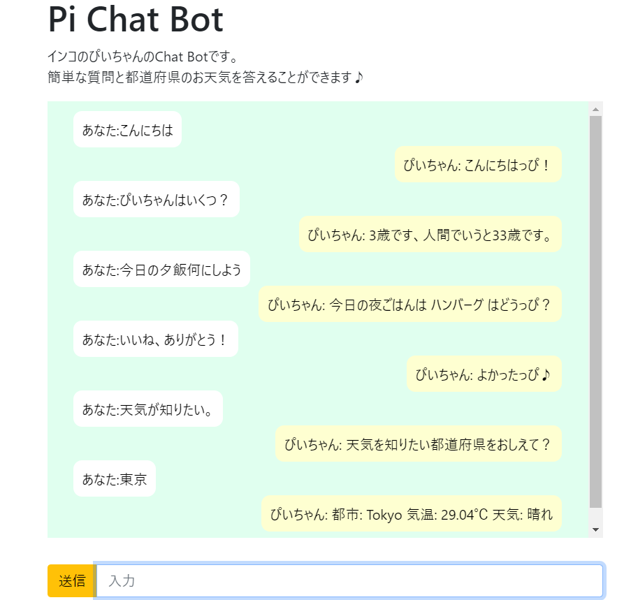

会話や天気情報をこたえられるChat Botです。
URL
code
主な機能
朝ごはん、昼ごはん、夕ごはんの提案: ユーザーが「朝食」「昼食」「夕食」といった食事に関する質問をすると、ランダムに朝食、昼食、夕食の提案を行います。
一般的な質問への応答: ユーザーが「自己紹介」「種類」「年齢」「出身」など、一般的な質問をすると、その内容に応じた適切な応答を返します。
BERTを使用した質問応答: BERTモデルを使用して、特定のコンテキスト内での質問に対する応答を生成します。例えば、ユーザーが何かを尋ねると、前提となるテキストを参照して答えを生成します。
サイトの目的
情報提供: ユーザーが天気情報や食事の提案などの情報を簡単に入手できるようにすること。
娯楽: ユーザーがこのチャットボットと対話することで楽しい体験を提供すること。
技術の実験: 自然言語処理（NLP）や機械学習の技術を学習し、実践する場として利用すること。。
使用技術
Python/Django/HTML/CSS/Heroku